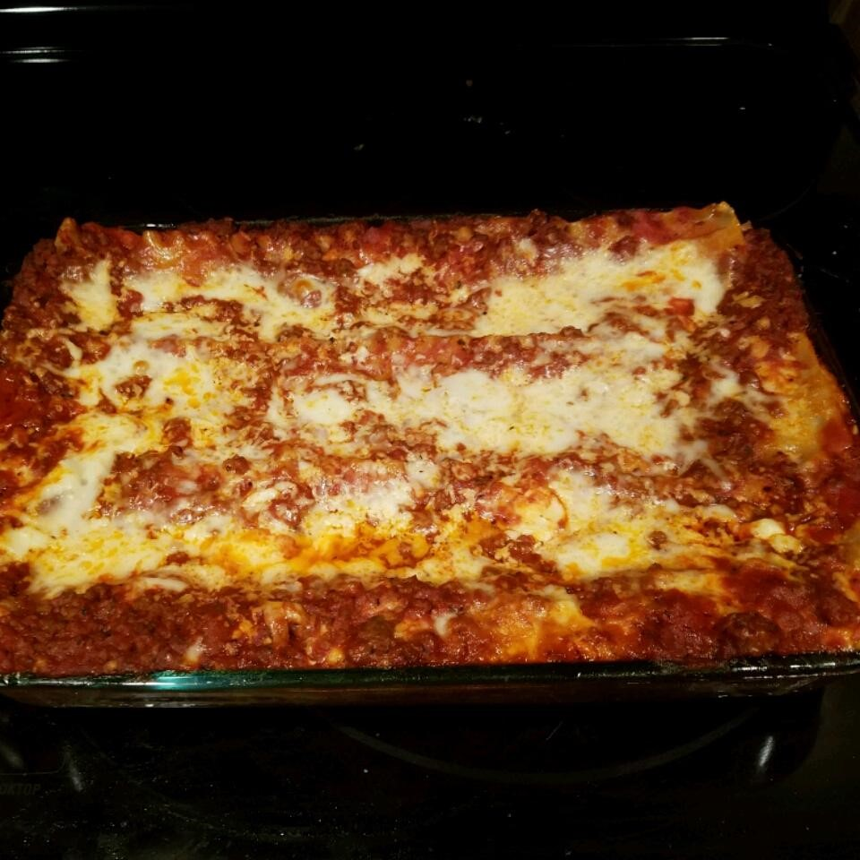

Lasagna Recipe

Picture of finished lasagna
This recipe is a deep dish lasagna that is quick and easy to make!
Ingredients
- 12 uncooked lasagna noodles
- 1 pound sweet Italian sausage
- 2/3 cup chopped onions
- 1/2 tablespoon minced garlic
- 3 (6 ounce) cans tomato paste
- 1 (15 ounce) can tomato sauce
- 2 cups water
- 1 1/2 teaspoons Italian seasoning
- 1 1/2 teaspoons dried oregano
- 1 1/2 teaspoons dried basil leaves
- 1 pound part-skim ricotta cheese
- 1 (10 ounce) package chopped spnach, thawed and squeeze dried
- 1/2 cup grated Parmesan cheese
- 3 eggs
- 2 teaspoons garlic salt
- 1/4 teaspoon ground black pepper
- 3 cups shredded mozzarella cheese
Steps
- Preheat oven to 350 degrees F (175 degrees C). Lightly grease a 9x13-inch baking dish.
- Bring a large pot of lightly salted water to a boil. Add lasagna noodles and cook for 8 to 10 minutes or until al dente; drain.
- In skillet over medium heat, brown the sausage with the onions, garlic and 1/2 the parsley; drain excess fat. Add tomato paste, tomato sauce, water, Italian seasoning, oregano, and basil; mix well. Simmer, covered, for 5 minutes; stirring occasionally.
- In a bowl, combine remaining parsley and ricotta, spinach, Parmesan, eggs, garlic salt, and pepper; mix well.
- Spread 2 cups sauce in the bottom of the prepared baking dish. Begin layering with 4 noodles, 1/2 cheese mix, 1/3 remaining sauce, and 1 cup mozzarella. Repeat this layer again; the last layer will be noodles, sauce and mozzarella cheese. Cover pan with aluminum foil.
- Bake in the preheated oven for 45 minutes. Remove the foil; bake, uncovered, an additional 10 minutes, or until cheese is bubbly and starting to brown. Let cool 10 minutes before serving.